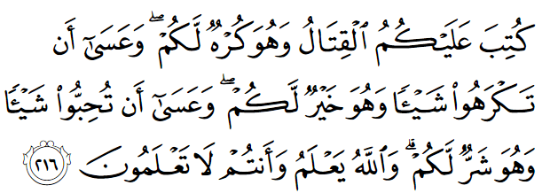
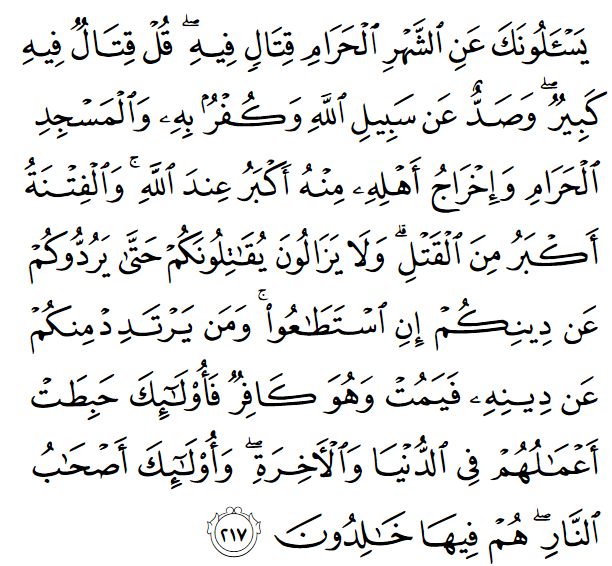

কু’রআনে জিহাদ – সংগ্রাম, এবং কিতাল – যুদ্ধ সম্পর্কে কিছু আয়াত রয়েছে, যেগুলো শুধু অমুসলিমরাই নয়, একই সাথে মুসলিমরাও ব্যাপক অপব্যবহার করেছে ইসলামকে একটি আগ্রাসী, আক্রমণাত্মক ধর্ম হিসেবে মানুষের কাছে অপপ্রচার করতে। একদিকে অমুসলিমরা এই আয়াতগুলোকে ব্যবহার করেছে ইসলামের শান্তির বাণীকে ধামাচাপা দিয়ে, অমুসলিমদের মনে ইসলামের প্রতি ভয় ঢুকিয়ে দিতে। অন্যদিকে একদল মুসলিম নেতারা এই আয়াতগুলো ব্যবহার করেছে সরলমনা মুসলিম যুবকদের মগজ ধোলাই করে নিজেদের উদ্দেশ্য হাসিল করতে।
বিশেষ করে বিংশ শতাব্দীতে এসে আমরা দেখতে পাই, পশ্চিমাদের অত্যাচারের শিকার হয়ে অনেক ইমাম, আলেম তাদের আগের শান্তিপ্রিয় নীতি রাতারাতি পাল্টে ফেলে, প্রতিহিংসার বশবর্তী হয়ে সম্পূর্ণ বিপরীত কথা বলা শুরু করেন। যেই ইমামরা একসময় অমুসলিমদের সাথে শান্তিপূর্ণ সহঅবস্থান সমর্থন করে বক্তৃতা দিতেন, তারাই কয়েক বছর পর সব অমুসলিমদের মেরে ফেলার মতো ফাতওয়া দেওয়া শুরু করেন। অনেকসময় তারা তাদের বক্তৃতা দেওয়ার দক্ষতা এবং ইন্টারনেটের প্রযুক্তির পারদর্শিতা খাঁটিয়ে সারা পৃথিবীতে হাজার হাজার মুসলিমের মধ্যে আগ্রাসী মানসিকতার সূচনা করে দেন। তাদেরকে ঠিক সেই সব কথাই বলতে দেখা যায়, যেটা আজকের মুসলিম তরুণ, যুবকরা শুনতে চায়, করার স্বপ্ন দেখে। তাদের জ্বালাময়ী লেখনী, রক্ত গরম করা বক্তৃতা তরুণরা চোখ বড় বড় করে গিলতে থাকে। যার ফলে রাতারাতি তারা তরুণদের কাছে সেলিব্রিটি হয়ে ওঠেন। তরুণরা কয়েকটা বক্তৃতা শুনেই সারা পৃথিবীর হাজার হাজার, লক্ষ আলেমদেরকে ‘বাতিল’, ‘সরকারের দালাল’, ‘ভন্ড’ বলে গালিগালাজ করা শুরু করে দেয়। আর এইসব দক্ষ বক্তাদেরকে পৃথিবীর বুকে একমাত্র সঠিক ইসলামের বাহক মনে করা শুরু করে।
এভাবে ইসলামের অপপ্রচার করতে গিয়ে এই সব ইমামরা শুধুই যে কু’রআনের আয়াতগুলোকে প্রেক্ষাপট উপেক্ষা করে প্রচার করেন তা নয়, একইসাথে তারা কিছু হাদিসকেও আংশিক প্রচার করে মানুষের মধ্যে ব্যাপক বিভ্রান্তি ছড়িয়েছেন। খোঁজ নিলে দেখা যায় এই সব দক্ষ বক্তারা কোনো ফকিহ নন। এমনকি অনেকের কোনো বড় প্রাতিষ্ঠানিক ডিগ্রিও নেই ইসলামের শিক্ষায়। তাদের বেশিরভাগই কোনো মসজিদের ইমামের চেয়ে বড় কিছু নন। অথচ তারা ফতোয়া দিয়ে বেড়ান। এদের শিক্ষাগত যোগ্যতা যেই সব আলেমেদের তুলনায় শিশুতুল্য, সেই সব বড় আলেমদেরই তারা তুচ্ছ তাচ্ছিল্য করেন, এমনকি তাদের শিক্ষকদেরকেও। সারা পৃথিবীর মুসলিম তরুণরা এরকম কয়েক জন দক্ষ বক্তাদের কথায় মুগ্ধ হয়ে, তাদেরকে বিরাট আলেম মনে করে, হাজার হাজার সুযোগ্য আলেমদের ফাতওয়াকে উপেক্ষা করে, কবে অমুসলিমদের রক্তে নিজেদের রক্ত পিপাসা মেটাবে, তার জন্য পাগল হয়ে গেছে।
দেখা যাক কু’রআন আসলে কী বলে—

যুদ্ধ করা তোমাদের জন্য বাধ্যতামূলক করা হয়েছে, যদিও তোমরা তা মোটেও পছন্দ করো না। কিন্তু হতে পারে তোমরা এমন কিছু অপছন্দ করো, যা আসলে তোমাদের জন্যই ভালো। আবার তোমরা এমন কিছু পছন্দ করো, যা তোমাদের জন্য খারাপ। আল্লাহ تعالى জানেন, যেখানে কিনা তোমরা জানো না। [আল-বাক্বারাহ ২১৬]
কুর’আনে যত জায়গায় আল্লাহ تعالى কিতাল (যুদ্ধ, লড়াই) এর আদেশ দিয়েছেন, তার প্রত্যেকটির পেছনে কোনো না কোনো প্রেক্ষাপট রয়েছে। এমন কোনো আয়াত পাওয়া যাবে না, যেখানে আল্লাহ تعالى মুসলিমদেরকে কোনো কারণ ছাড়াই নিজে থেকেই গিয়ে মারামারি করতে বলেছেন, মানুষকে জোর করে মুসলিম বানানোর জন্য বা নিজেদের আধিপত্য প্রসার করার জন্য। যেমন, আল-বাক্বারাহ’র এই আয়াতগুলোতে মুসলিমদের লড়াই করার নির্দেশ তখনি দেওয়া হয়েছে, যখন মানুষ তাদের বিরুদ্ধে লড়াই শুরু করে। যুদ্ধ, লড়াই এর ব্যাপারে কুর’আনে সবসময় শর্ত হচ্ছে: আত্মরক্ষার প্রয়োজন, অথবা ইসলাম মেনে চলতে বাঁধা দেওয়া।[২][৪][১১] এর পরের আয়াতেই আমরা সেটা দেখতে পারবো।

যখনি কাউকে দেখবেন কু’রআনে যুদ্ধের কোনো একটি আয়াত প্রচার করছে, এর আগের বা পরের কোনো আয়াত প্রচার করছে না, সাথে সাথে ধরে নেবেন, সে প্রেক্ষাপট লুকিয়ে রেখে, তার নিজের ইচ্ছাকে প্রচার করার জন্য কু’রআনকে হাতিয়ার হিসেবে ব্যবহার করছে। কু’রআনে আইন সম্পর্কিত আয়াতগুলো কোনো বিচ্ছিন্ন নির্দেশ নয়। বেশিরভাগ ক্ষেত্রেই এর আগের বা পরের আয়াতগুলো বলে দেয়, কখন কোন পরিস্থিতে সেই আয়াতটি প্রযোজ্য বা প্রযোজ্য নয়। যখনি কেউ কোনো সূরার একটি আয়াতের উক্তি দেয়, আগের এবং পরের আয়াতগুলো দেয় না, সে এক ভয়ঙ্কর ভুল করে। অনেক সময় সেটা ভুল নয়, উদ্দেশ্য প্রণোদিত মতলব।
যেমন, উপরের আয়াতটি আগের বা পরের কোনো আয়াত ছাড়াই দক্ষ বক্তাদের প্রচার করতে দেখা যায়। তারা এই আয়াত দেখিয়ে মুসলিমদেরকে দেখান যে, জিহাদ করা বাধ্যতামূলক, সুতরাং তারা ঠিক যেভাবে, যাদের সাথে জিহাদ করতে বলছেন, সেটা করতে মুসলিমরা বাধ্য। কোনো তর্ক করা যাবে না। হাজার হোক এটা কুরআনের আয়াত! —এই ধরনের প্রতারণা ধরা পড়ে যায়, যখন আমরা এর আগের এবং পরের আয়াতগুলো মিলিয়ে পড়ি।
জিহাদ সম্পর্কে মুসলিমদের অবস্থান
ডঃ ইউসুফ আল-কারাদাউয়ী’র বিখ্যাত বই ‘ফিকহুল জিহাদ’-এ জিহাদ সম্পর্কে বিস্তারিত আলোচনা রয়েছে। সেখানে তিনি আত্মরক্ষায় জিহাদ (জিহাদ আদ-দাফ’), আক্রমণাত্মক জিহাদ (জিহাদ আত-তালাব) —এই দুই ধরনের জিহাদ সম্পর্কে প্রাচীন আলেমরা, যেমন ইবন তাইমিয়াহ, আস-সুয়ুতি, ইবনুল কাইয়্যিম, ইমাম আবু হানিফা, ইমাম মালিক, ইমাম আহমাদ, ইমাম শাফিই সহ শত ইমাম, ক্বাদি, মুহাদ্দিস, ফাকিহদের জিহাদ সম্পর্কে লেখা বই, মতবাদ নিয়ে বিস্তারিত আলোচনা করেছেন। সেখানে তিনি দেখিয়েছেন যে, মুসলিমদের মধ্যে জিহাদ সম্পর্কে মূলত দুটো মত রয়েছে[৩৩৩]—
১) একদল মনে করে জিহাদ শুধুমাত্র আত্মরক্ষা এবং ইসলাম মানতে বাঁধা দূর করতে করা যাবে। জিহাদে শুধুমাত্র যারা আক্রমণ করছে, তাদেরকে পালটা আক্রমণ করা যাবে। আক্রমণ করছে না বা আক্রমণে প্রত্যক্ষভাবে সাহায্য করছে না, এরকম কাউকে আক্রমণ করা যাবে না।
২) আরেকদল মনে করে শুধুমাত্র কুফরি, অর্থাৎ ইসলামে বিশ্বাস না করার কারণে, যে কোনো মানুষ, জাতি, দেশকে আক্রমণ করা যাবে, তারা মুসলিমদের ক্ষতি না করলেও যাবে। তাদেরকে ইসলামের দাওয়াত দিলে তারা যদি ইসলাম মেনে না নেয়, তাহলেই তারা কাফির হয়ে যাবে, এবং কুফরি করার কারণে তাদেরকে আক্রমণ করা যাবে, অথবা তাদের কাছ থেকে জিযিয়া (কর) নেওয়া যাবে।
লেখক তার ১৪০০ পৃষ্ঠার বিশাল বইয়ে উভয় পক্ষের বহু দলিল উপস্থাপন করে দেখিয়েছেন যে, প্রথম অবস্থানের পক্ষে ইসলামের শুরু থেকে আজ পর্যন্ত সিংহভাগ ইমাম, ক্বাদি, ফাকিহদের সমর্থন রয়েছে। এদের মধ্যে রয়েছেন ইবন তাইমিয়াহ, আস-সুয়ুতি, ইবনুল কাইয়্যিম, ইমাম আবু হানিফা, ইমাম মালিক, ইমাম আহমাদ সহ শত শত আলেম। দ্বিতীয় অবস্থানের পক্ষে ইমাম শাফিই এবং সংখ্যালঘু কিছু আলেমের সমর্থন রয়েছে। দ্বিতীয় অবস্থানের পক্ষে যে সমস্ত দলিল দেখানো হয়, সেগুলো পরিষ্কারভাবে কু’রআনের বহু আয়াতের বিরুদ্ধে যায়। যে কারণে দ্বিতীয় অবস্থানের পক্ষের আলেমরা কু’রআনের সেই সব আয়াতকে মানসুখ অর্থাৎ বাতিল ঘোষণা করে তাদের অবস্থান সমর্থন করার চেষ্টা করেছেন, যা প্রথম পক্ষের আলেমরা যথেষ্ট দলিল দিয়ে দুর্বল প্রমাণ করেছেন।[৩৩৩]
হাদিসের অপপ্রচার
আত্মরক্ষা বা ইসলামে বাঁধা দেওয়া ছাড়া এমনিতেই অমুসলিমদেরকে আগ্রাসী আক্রমণ করা সমর্থন করতে একটি অত্যন্ত জনপ্রিয় হাদিস দক্ষ বক্তাদের প্রায়ই ব্যবহার করতে দেখা যায়। বাজারে প্রচলিত জিহাদি বইগুলোতে এই হাদিসটি থাকবেই—
“আমি মানুষের বিরুদ্ধে যুদ্ধ করার জন্য আদিষ্ট হয়েছি যতক্ষণ না তারা বলে “লা ইলাহা ইল্লাল্লাহ” সুতরাং যে ব্যাক্তি “লা ইলাহা ইল্লাল্লাহ” এর সাক্ষ্য দিবে তাঁর জান ও মাল-সম্পদ আমার থেকে নিরাপদ। তবে ইসলামের কোনো হক্ ব্যাতীত। আর তাঁর অন্তরের হিসাব আল্লাহ তাআলার উপর ন্যস্ত।” (বুখারী, মুসলিম)
এই হাদিসটি পড়লে মনে হবে, রাসুল عليه السلام বলছেন যে, তাকে পাঠানো হয়েছে সব অমুসলিমদের সাথে যুদ্ধ করার জন্য, যতক্ষণ না তারা কালেমা পড়ে সবাই মুসলিম হয়ে না যাচ্ছে। তার মানে আমাদেরকেও সব অমুসলিমদের আক্রমণ করতে হবে, যতক্ষণ না তারা কালেমা পড়ে মুসলিম না হচ্ছে। —এটা কত বড় বিভ্রান্তি দেখুন। এই হাদিসটি মূল হাদিসের অংশবিশেষ। মূল আরবি পড়লেই বিভ্রান্তিটি ধরা যাবে—
عَنْ ابْنِ عُمَرَ رَضِيَ اللَّهُ عَنْهُمَا، أَنَّ رَسُولَ اللَّهِ صلى الله عليه و سلم قَالَ: “أُمِرْتُ أَنْ أُقَاتِلَ النَّاسَ حَتَّى يَشْهَدُوا أَنْ لَا إلَهَ إلَّا اللَّهُ وَأَنَّ مُحَمَّدًا رَسُولُ اللَّهِ، وَيُقِيمُوا الصَّلَاةَ، وَيُؤْتُوا الزَّكَاةَ؛ فَإِذَا فَعَلُوا ذَلِكَ عَصَمُوا مِنِّي دِمَاءَهُمْ وَأَمْوَالَهُمْ إلَّا بِحَقِّ الْإِسْلَامِ، وَحِسَابُهُمْ عَلَى اللَّهِ تَعَالَى” .
[رَوَاهُ الْبُخَارِيُّ]، [وَمُسْلِمٌ]
ইব্নু ‘উমার (রাঃ) থেকে বর্ণিত: আল্লাহর রসূল (সাল্লাল্লাহু ‘আলাইহি ওয়া সাল্লাম) বলেনঃ আমি লোকদের সাথে যুদ্ধ চালিয়ে যাবার জন্য নির্দেশিত হয়েছি, যতক্ষন না তারা সাক্ষ্য দেয় যে, আল্লাহ ব্যতীত প্রকৃত কোন উপাস্য নেই ও মুহাম্মাদ (সাল্লাল্লাহু ‘আলাইহি ওয়া সাল্লাম) আল্লাহর রসূল, আর সালাত প্রতিষ্ঠা করে ও যাকাত আদায় করে। তারা যদি এগুলো করে, তবে আমার পক্ষ হতে তাদের জান ও মালের ব্যাপারে নিরাপত্তা লাভ করলো; অবশ্য ইসলামের বিধান অনুযায়ী যদি কোন কারণ থাকে, তাহলে স্বতন্ত্র কথা। আর তাদের হিসাবের ভার আল্লাহর উপর অর্পিত।
এটি ইমাম নায়ায়ির ৪০ হাদিসের মধ্যে ৮ নম্বর হাদিস, সাহিহ বুখারির ২:১৮ । লক্ষ্য করে দেখুন, এই হাদিসের একটি অংশ বাদ দেওয়া হয়েছে: “আর সালাত প্রতিষ্ঠা করে ও যাকাত আদায় করে” কারণ এই অংশটি থাকলে বিরাট সমস্যা। বহু মুসলিম আছে যারা সালাত ও যাকাত আদায় করে না। তার মানে আমাদেরকে আমাদের চারপাশের মুসলিমদের সাথেও যুদ্ধ করতে হবে, কারণ তারা অনেকেই সালাত প্রতিষ্ঠা করে না, যাকাতও আদায় করে না। তখন আর এই হাদিসটাকে শুধু অমুসলিমদের নামে চালিয়ে দেওয়া যাবে না।
এই হাদিসটি পড়লে প্রথমেই যেই প্রশ্ন আশা উচিত, সেটা হচ্ছে النَّاسَ বা ‘লোকরা’ কারা যাদের বিরুদ্ধে যুদ্ধ করতে বলা হয়েছে? এরা কি সব অমুসলিম? বিখ্যাত হাদিস বিশারদরা কী বলেছেন দেখি—
ইবন তাইমিয়্যাহ বলেন, “সেই সব লোকদের নির্দেশ করে, যারা যুদ্ধ শুরু করেছে, যাদের সাথে যুদ্ধ করতে আল্লাহ تعالى আমাদের অনুমতি দিয়েছেন। এটি তাদের নির্দেশ করে না, যাদের সাথে আমাদের চুক্তি আছে, যাদের সাথে চুক্তি মানতে আল্লাহ تعالى আমাদের বলেছেন।” [মাজমু’ আল-ফাতাওয়া ১৯/২০] সৌদি আরবের প্রাক্তন প্রধান মুফতি শাইখ ইবন বা’য এর ফাতয়া অনুসারে এরা হচ্ছে সেই সব লোক, যারা মুখে ইসলাম গ্রহণ করেছে বলে, কিন্তু কাজে তারা ইসলামের মূল ভিত্তিগুলো অনুসরণ করে না, অর্থাত নামাজ প্রতিষ্ঠা করে না, যাকাত আদায় করে না।[৩৪৬] ইবন হাজার আল-আস্কালানি তার সাহিহ বুখারির ব্যাখ্যায় ৫ বা ৬ ধরনের মানুষের কথা বলেছেন, যাদের সাথে যুদ্ধ করা যাবে। অর্থাৎ কাদের সাথে যুদ্ধ করা যাবে, সেটা সুনির্দিষ্ট, ঢালাও ভাবে কোনো দেশের সব অমুসলিমরা নয়।[৩৪৭]
এরকম অনেক উদাহরণ আমরা দেখতে পাই, যেখানে কোনো হাদিসের বর্ণনা পড়লে মনে হবে আমাদের বলা হয়েছে ক, খ, গ করতে, অথচ সেই হাদিসের ব্যাখ্যা পড়লে দেখা যাবে আমাদেরকে আসলে চ, ছ, জ করতে হবে। একারণেই সরাসরি সাহিহ হাদিস গ্রন্থগুলো পড়ে যদি মনে করি আমরা রাসুলের عليه السلام নির্দেশ মানছি, তাহলে সেটা বিরাট বোকামি। যারা ইসলাম নিয়ে যথাযথ প্রাতিষ্ঠানিক শিক্ষা নিয়েছেন, তারা এই বোকামি করেন না। আমরা কু’রআনের মতো সবচেয়ে পরিষ্কার ভাষার বাণী যথাযথভাবে বোঝার জন্য তাফসীর পড়ি, অথচ হাদিস, যা রাসুলের বাণী মানুষের মুখে বর্ণনা করা, যার ভাষা আল্লাহর تعالى বাণীর ধারে কাছেও সূক্ষ্ম নয়, সেটার কোনো ধরনের ব্যাখ্যা না পড়েই ধরে নেই যে, রাসুল عليه السلام ঠিক কখন কোন প্রেক্ষিতে কী বলতে চেয়েছেন, কাদেরকে নিয়ে সেটা বলেছেন, কাদের ব্যাপারে সেটা বলেননি, তা আমি একদম সঠিকভাবে বুঝে গেছি। কত বড় ভ্রান্ত বিশ্বাস!

পবিত্র মাসগুলোতে যুদ্ধ করা নিয়ে ওরা তোমাদেরকে প্রশ্ন করে। বলে দাও, “এসময় যুদ্ধ করা বিরাট বড় অপরাধ। কিন্তু আল্লাহর تعالى পথে চলতে বাঁধা দেওয়া, তাঁকে জেনেশুনে অবিশ্বাস করা, মাসজিদুল হারামে যেতে বাঁধা দেওয়া, সেখানকার মানুষদেরকে বের করে দেওয়া —এগুলো সব আল্লাহর تعالى কাছে আরও বড় অপরাধ। অন্যায় বাঁধা, নির্যাতন (ফিতনা) হত্যার চেয়েও খারাপ। ওরা তোমাদের সাথে যুদ্ধ করা বন্ধ করবে না, যতক্ষণ না ওরা তোমাদেরকে তোমাদের ধর্ম থেকে ফিরিয়ে আনতে পারে, যদি তাদের পক্ষে সেটা করা সম্ভব হয়। যদি তোমাদের কেউ কাফির অবস্থায় মারা যায়, তাহলে তোমাদের কাজগুলো সব বাতিল হয়ে যাবে, এই দুনিয়াতে এবং আখিরাতেও। আর এরাই হচ্ছে তারা, যারা জাহান্নামের আগুনের সঙ্গী। সেখানে তারা চিরকাল থাকবে।” [আল-বাক্বারাহ ২১৭]
অন্যায় বাঁধা, নির্যাতন (ফিতনা) হত্যার চেয়েও খারাপ
ইসলাম অন্যায় সহ্য করে না। মুসলিমদের উপর অন্যায় নির্যাতন, নিপীড়ন হচ্ছে, আর মুসলিমরা অন্যায় মুখ বুজে সহ্য করে থাকবে, এটা ইসলামের শিক্ষা নয়। কারণ এভাবে অন্যায়কে প্রশ্রয় দিলে অন্যায় বাড়তেই থাকবে। একটা সময় গিয়ে অন্যায়কারীরা এতটাই শক্তিশালী এবং বেপরোয়া হয়ে যাবে যে, তারা আইনের পরোয়া না করে প্রকাশ্যে অন্যায় করতে থাকবে। কেউ আর তখন প্রতিরোধ করতে সাহস করে এগিয়ে আসবে না। একারণে অন্যায়কে যদি ছোট থাকতেই নিয়ন্ত্রণ করা না হয়, তখন তা নিয়ন্ত্রণের বাইরে চলে যায়। অন্যায় প্রতিহত করতে তখন অনেক রক্তপাত ঘটাতে হয়।
মানুষকে হত্যা করা অবশ্যই জঘন্য কাজ। কিন্তু মুসলিমদেরকে আল্লাহর تعالى ইবাদত করতে বাঁধা দেওয়া, শুধুই মুসলিম হওয়ার জন্য তাদের উপর অত্যাচার করাটা তাদেরকে হত্যা করার থেকেও খারাপ। হত্যা করলে বরং সেই মুসলিমরা শহীদ হয়ে তাদের প্রভুর কাছে ফিরে যেতে পারে। কিন্তু হত্যা না করে তাদেরকে জীবিত রেখে নির্যাতন করাটা তাদের জন্য বরং আরও বেশি কষ্টের।
আল্লাহর تعالى কাছে মুসলিমদের রক্ত মাসজিদুল হারামের থেকেও বেশি দামি, যে কোনো পবিত্র মাসের থেকেও বেশি গুরুত্ব রাখে। কেউ যদি মুসলিমদেরকে এই সব পবিত্র জায়গায়, পবিত্র মাসে আক্রমণ করে, তাহলে তাকেও পালটা আক্রমণ করে প্রতিহত করতে হবে। সেটা রমজান মাস হোক, আর কা’বার পাশেই হোক না কেন। দুঃখজনকভাবে আজকাল দেখা যায় যে, একটা মসজিদ ভাঙলে মুসলিমদের রক্ত যত গরম হয়ে যায়, যে ব্যাপক প্রতিবাদ, আন্দোলন দেখা যায়, তার ধারে কাছে কিছু দেখা যায় না, যখন কোনো দেশে মুসলিমদের গণহারে মেরে শেষ করে ফেলা হয়। যেখানে আল্লাহর تعالى কাছে মুসলিমদের জীবনের মূল্য যেকোনো মসজিদ, এমনকি কা’বার থেকেও বেশি, সেখানে আজকে মুসলিম জাতি তার মুসলিম ভাই-বোনদের রক্তের থেকে মসজিদ ভাঙ্গা, ব্যাঙ্গাত্নক কার্টুনের প্রতি বেশি দরদী হয়ে গেছে।
যতক্ষণ না ওরা তোমাদেরকে তোমাদের ধর্ম থেকে ফিরিয়ে আনতে পারে
প্রতি বছর শত শত অমুসলিম সংগঠন কোটি কোটি টাকার বাজেট খরচ করছে ইসলামের বিরুদ্ধে ভুয়া, অশ্লীল, অলৌকিক তথ্য দিয়ে ইন্টারনেট ভরে দিতে, যা পড়ে মুসলিম এবং অমুসলিম উভয় মানুষরাই ব্যাপক বিভ্রান্ত হয়ে ইসলামের প্রতি আস্থা হারিয়ে ফেলে। শুধুমাত্র আমেরিকাতেই নিচের বিখ্যাত দাতা সংগঠনগুলো ২০০১-২০০৯ সালের মধ্যে ৪২.৬ মিলিয়ন ডলার অনুদান দিয়েছে বই, ওয়েবসাইট, টিভি প্রোগ্রাম, চলচ্চিত্র, ইউটিউব, ফেইসবুক এর মাধ্যমে আমেরিকায় এবং সারা বিশ্বে মানুষের মধ্যে ইসলামের প্রতি আতংক ছড়িয়ে দিয়ে, ইসলাম যে একটি ‘মধ্যযুগীয়’, ‘বর্বর’, ‘টেররিস্ট বানানোর ধর্ম’ – এই ধারণা বদ্ধমূল করে দেবার জন্য—
- Donors Capital Fund
- Richard Mellon Scaife foundations
- Lynde and Harry Bradley Foundation
- Newton D. & Rochelle F. Becker foundations and charitable trust
- Russell Berrie Foundation
- Anchorage Charitable Fund and William Rosenwald Family Fund
- Fairbrook Foundation
Democracy Now এর নিচের ভিডিও ইন্টার্ভিউটি দেখলে এবং Center for American Progress -এর রিপোর্টটি পড়লে[৩৪৮] বুঝতে পারবেন, কত ব্যাপক ভাবে মানুষের মধ্যে ইসলামের প্রতি ভীতি প্রচার করার জন্য এবং মুসলিমদেরকে কোণঠাসা করে রাখার জন্য সরকারের উচ্চপদস্থ নেতা থেকে শুরু করে, বিলিয়নীয়াররা পর্যন্ত সংঘবদ্ধ হয়ে কাজ করে যাচ্ছে।
মনে রাখবেন, ইন্টারনেটে প্রচুর উচ্চ শিক্ষিত এবং অত্যন্ত দক্ষ প্রতারক রয়েছে। এখানে সর্বাধুনিক প্রযুক্তি ব্যবহার করে, সবচেয়ে মোক্ষমভাবে মানুষকে প্রতারিত করা হয়, যেটা অনেক শিক্ষিত, আধুনিক মানুষও ধরতে পারেন না। আপনি নিজেকে যতই বুদ্ধিমান, আধুনিক, বিবেচক মানুষ মনে করুন না কেন, বছরে কয়েক কোটি টাকার বেতন দিয়ে পিএইচডি করা স্কলারদের রাখা হয়েছে, যাদের কাজই হচ্ছে ভুয়া ইসলামিক আর্টিকেল লিখে মুসলমানদেরকে বোকা বানানো, ইসলামের বিরুদ্ধে ভুল তথ্য প্রচার করে বিধর্মীদেরকে মুসলিমদের বিরুদ্ধে উস্কে দেওয়ার জন্য বই লেখা, সারা পৃথিবীতে ইসলামের বিরুদ্ধে লেকচার দিয়ে বেড়ানো এবং বিভিন্ন দেশের রাজনৈতিক ব্যক্তিদেরকে মগজ ধোলাই করা, যাতে করে তারা ইসলামের বিরুদ্ধে সংঘবদ্ধ হয়। এদের বই, আর্টিকেল, ওয়েবসাইট, লেকচারে মগজ ধোলাইয়ের শিকার হয়ে অনেক শিক্ষিত, ধার্মিক মানুষ ঘোরতর নাস্তিক হয়ে গেছে। সুতরাং সাবধান!
এখন আপনার মনে প্রশ্ন জাগে, কেন মানুষ এরকম উঠে পড়ে লেগেছে ইসলামের বিরুদ্ধে? এত কোটি কোটি টাকা খরচ করে কার কী লাভ হচ্ছে? এর অন্যতম কারণ হচ্ছে পৃথিবীতে মুসলিমরা ‘আশঙ্কাজনক’ হারে বাড়ছে। বর্তমানে পৃথিবীতে ১.৭ বিলিয়ন মুসলিম, খ্রিষ্টান ২ বিলিয়ন। যেভাবেই হোক মুসলিমদের সংখ্যাগরিষ্ঠ হওয়া বন্ধ করতে হবে। না হলে খ্রিষ্টান ধর্ম এবং তাদের কোটি কোটি ডলারের বিশাল চার্চ বাণিজ্য ব্যাপক ক্ষতির মধ্যে পড়বে। দ্বিতীয় কারণ শারিয়াহ আইন বন্ধ করা। যদি শারিয়াহ আইন কোনো দেশে প্রচলিত হয়, তাহলে মদ, জুয়া, সুদ ইত্যাদি বন্ধ হয়ে যাবে। শুধুমাত্র ব্রিটেনেই বছরে ১৭ বিলিয়ন পাউন্ডের বিয়ার বিক্রি হয়! ইসলাম প্রতিষ্ঠিত হলে এই সব হারাম ব্যবসার শেয়ার হোল্ডার শত শত বিলিয়নিয়ার এবং হাজার হাজার মিলিয়নিয়ারের ব্যাপক ক্ষতি হবে। সামরিক অস্ত্র তৈরির পিছনে জড়িত হাজার কোটি ডলারের বাণিজ্যে ব্যাপক ধ্বস নামবে। প্রচলিত হারাম ব্যাংকগুলো বিলিয়ন ডলারের ক্ষতিতে পড়বে। এজন্য মাত্র কয়েক শ মিলিয়ন ডলার খরচ করে ইসলামের প্রচারে বাধা দিতে পারলে এবং শারিয়াহ নিষিদ্ধ করে মানুষকে ইসলামিক আইন মানা থেকে দূরে সরিয়ে রাখতে পারলে শেষ পর্যন্ত বিলিয়ন ডলারের লাভ করা যায়। একারণেই পৃথিবীর অনেক বড় বড় মিলিওনিয়ার এবং বিলিয়নিয়াররা কয়েক শ মিলিয়ন ডলার বাজেট বরাদ্দ করে রেখেছে ইসলামের বিরুদ্ধে যে সংগঠনগুলো কাজ করে যাচ্ছে, তাদেরকে যথাসাধ্য অর্থনীতিক সাহায্য দেওয়ার জন্য, কারণ সেই বিলিয়নিয়ারদের কাছে এটা একটি লাভজনক লঙ টার্ম ইনভেস্টমেন্ট।
তৃতীয় কারণ, যার জন্য আমরা মুসলিমরাই দায়ী, সেটা হচ্ছে আমাদের বানানো ‘ইসলামি সংস্কৃতি’। আজকে মুসলিমরা ইসলামি সংস্কৃতি বলতে যা অনুসরণ করে, তা হচ্ছে মূলত আরব সংস্কৃতি, বাংলাদেশের বেলায় পাকিস্তানি বা উত্তর ভারতীয় সংস্কৃতি। কোনটা ইসলামি রীতি, আর কোনটা আরব সংস্কৃতি —এদুটোকে আমরা গুলিয়ে ফেলেছি। যার কারণে আমরা ধরে নেই যে, একজন মুসলিম যদি জুব্বা, সালওয়ার, কামিজ না পড়ে, তাহলে সে কাফিরদের কাপড় পড়ছে, কারণ রাসুল عليه السلام শুধুমাত্র সেগুলোই পড়তেন। অথচ আরবরা যে ধরনের কাপড় পড়তো, রাসুল عليه السلام সেগুলোই পড়তেন। কমপক্ষে ১২ ধরনের কাপড়, এমনকি ট্রাউজার পড়তেও তাকে এবং তাঁর অনুমতি নিয়ে সাহাবাদেরকে পড়তে দেখা গেছে একাধিক হাদিসের বর্ণনায়।[৩৪৯] তাছাড়া আজকে যেই জুব্বাকে আমরা সবচেয়ে ‘সুন্নতি পোশাক’ মনে করি, সেই জুব্বা আবু লাহাবও পড়তো।
আমরা আমাদের কথা, কাজ, অনুষ্ঠান, আচার আচরণ সবকিছুতে আরবদের নকল করতে পারলে মনে করি যে, সেটা ইসলাম অনুসরণ করা হলো। এরকম একরোখা অন্ধ সাংস্কৃতিক অনুকরণের কারণে অন্যান্য সংস্কৃতির মানুষরা মনে করে যে, ইসলাম যদি আসে, তাহলে তাদের যাবতীয় সংস্কৃতি বাদ দিয়ে জুব্বা পড়া আরব হয়ে যেতে হবে। এই ধরনের আমূল পরিবর্তন যে কেউ তাদের জীবন যাত্রার উপর আক্রমণ হিসেবে দেখে। এটা তাদের ইসলামের প্রতি বিদ্বেষে আরও জ্বালানী যোগায়।
সূত্র:
- [১] নওমান আলি খানের সূরা আল-বাকারাহ এর উপর লেকচার এবং বাইয়িনাহ এর কু’রআনের তাফসীর।
- [২] ম্যাসেজ অফ দা কু’রআন — মুহাম্মাদ আসাদ।
- [৩] তাফহিমুল কু’রআন — মাওলানা মাওদুদি।
- [৪] মা’রিফুল কু’রআন — মুফতি শাফি উসমানী।
- [৫] মুহাম্মাদ মোহার আলি — A Word for Word Meaning of The Quran
- [৬] সৈয়দ কুতব — In the Shade of the Quran
- [৭] তাদাব্বুরে কু’রআন – আমিন আহসান ইসলাহি।
- [৮] তাফসিরে তাওযীহুল কু’রআন — মুফতি তাক্বি উসমানী।
- [৯] বায়ান আল কু’রআন — ড: ইসরার আহমেদ।
- [১০] তাফসীর উল কু’রআন — মাওলানা আব্দুল মাজিদ দারিয়াবাদি
- [১১] কু’রআন তাফসীর — আব্দুর রাহিম আস-সারানবি
- [১২] আত-তাবারি-এর তাফসীরের অনুবাদ।
- [১৩] তাফসির ইবন আব্বাস।
- [১৪] তাফসির আল কুরতুবি।
- [১৫] তাফসির আল জালালাইন।
- [১৬] লুঘাতুল কুরআন — গুলাম আহমেদ পারভেজ।
- [৩৪৬] Alifta.net (2016). Fatwas of Ibn Baz . Retrieved 11 January 2016, from http://www.alifta.net/fatawa/fatawaDetails.aspx?languagename=en&View=Page&PageID=4910&PageNo=1&BookID=14
- [৩৪৭] 40hadithnawawi.com (2016). “Hadith 8 – The Sanctity of a Muslim” Retrieved 11 January 2016, from http://40hadithnawawi.com/index.php/the-hadiths/hadith-8
- [৩৪৮] Center for American Progress. “The Roots of the Islamophobia Network in America”. Retrieved 11 January 2016, from https://www.americanprogress.org/issues/religion/report/2011/08/26/10165/fear-inc/
- [৩৪৯] Islamqa.info,. (2016). The clothing of the Prophet (blessings and peace of Allah be upon him) – islamqa.info. Retrieved 12 January 2016, from https://islamqa.info/en/126692